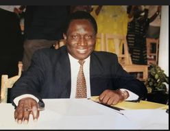

L'histoire de la CMCI est marquée par la fidélité à l'appel de Dieu et l'engagement à proclamer l'Évangile dans le monde entier.

Le Professeur Zacharias Tanee Fomum est le père fondateur de la Communauté Missionnaire Chrétienne Internationale (CMCI). Homme de Dieu, enseignant et visionnaire, il a posé les fondations d'un mouvement qui s'étend aujourd'hui dans plusieurs nations.
Le ministère du Professeur Fomum a été caractérisé par un enseignement profond de la Parole de Dieu, une vie de prière intense et un engagement total pour l'évangélisation mondiale. Son œuvre littéraire compte de nombreux ouvrages qui continuent d'édifier les croyants à travers le monde.
Après le décès du Professeur Zacharias Tanee Fomum le 14 mars 2009, un schisme s'est produit au sein du ministère. La faction dissidente a déménagé à Bertoua, dans la région de l'Est du Cameroun, où elle a installé son quartier général.
En 2012, la Communauté Missionnaire Chrétienne Internationale a tenu sa première convention internationale après le schisme. Cette concertation a permis d'affirmer les résolutions et déclarations qui ont été prises à la fin de la convention et de la concertation missionnaire tenue à Yaoundé du 26 au 30 Novembre 2012.
Leader et Coordinateur de la Communauté Missionnaire Chrétienne Internationale et ses Églises Associées.
Sous la direction du Président International, la CMCI poursuit sa mission d'évangélisation et d'implantation d'églises à travers le monde, fidèle à la vision du fondateur.
La CMCI s'est développée progressivement en implantant des églises dans différentes régions du Cameroun et du monde. Nous proclamons l'Évangile et établissons des communautés de croyants fidèles à la Parole de Dieu.
Ces différents pays se sont progressivement représentés dans notre mouvement missionnaire, témoignant de la fidélité de Dieu et de son œuvre à travers notre communauté.
Déclarations et Résolutions
Cette concertation historique a rassemblé les Églises Associées de la CMCI pour affirmer notre vision commune et notre engagement envers le Royaume de Dieu et le Seigneur Jésus-Christ.
La CMCI fonctionne selon une structure d'églises locales autonomes mais interdépendantes, dirigées par le Saint-Esprit à travers les Anciens de chaque église locale.
"Allez, faites de toutes les nations des disciples, les baptisant au nom du Père, du Fils et du Saint-Esprit, et enseignez-leur à observer tout ce que je vous ai prescrit. Et voici, je suis avec vous tous les jours, jusqu'à la fin du monde."
- Matthieu 28:19-20